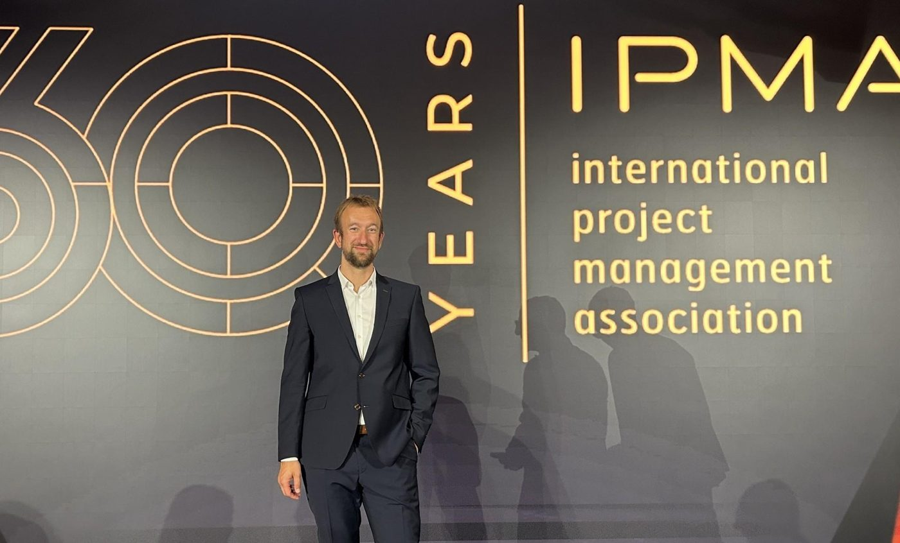
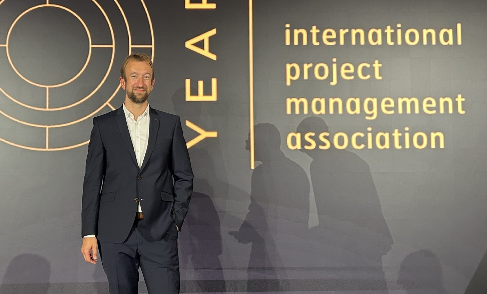
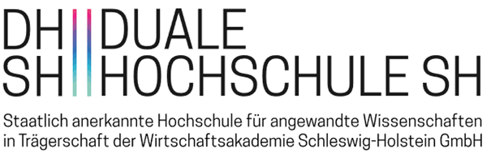
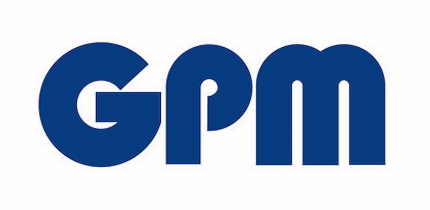
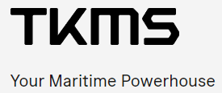
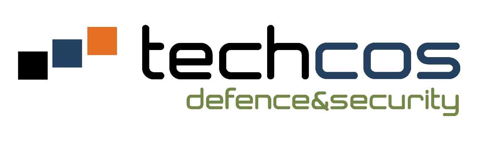

Tauchen Sie mit mir ab: in die Tiefen des Projektmanagements!
Ob in einer Beratung oder in einem Training: Sie werden nach einem Tauchgang mit mir Ihre Projekte besser verstehen und sie besser im Griff haben.

_beratung
Ich mag das Wort „Beratung“ nicht. Viele Kunden scheuen sich, einen Berater zu engagieren, weil sie sich nicht eingestehen, dass sie Unterstützung benötigen
Unterstützung ist in diesem Kontext negativ belegt. „Ich bin nicht zu doof“ ist eine Aussage, die ich schon vielfach – auch hinter meinem Rücken – gehört habe.
Deswegen sehe ich mich nicht gerne in der Rolle eines „Beraters“ sondern eher in der Rolle des „Fans“. Wie der Fan einer Fußballmannschaft bin ich der Support für Ihr Projekt.

Ich bin mit meiner Kompetenz da – besonders auch in schwierigen Phasen. Dann krempele ich die Ärmel hoch, übernehme Verantwortung, arbeite mit und unterstütze: das Projektteam, den Projektleiter, das PMO oder die Unternehmensführung.
Von der Durchführung einzelner Workshops, über die Umsetzung ausgewählter Arbeitspakete bis hin zum Vollzeit-Interim-Mandat. Meine Arbeit führt dazu, dass die Arbeit am Projekt wieder mehr motiviert.
Ich löse ihre Probleme in den Projekten, wie zum Beispiel....
Ein Projekt steckt fest und erreicht nicht die erwarteten Ergebnisse
Mehr erfahren 10 LösungenDas Projektteam ist überlastet und voller Konflikte
Mehr erfahren 7 LösungenZiele und der Plan gehen verloren
Mehr erfahren 11 LösungenSuche nach einem guten Projektleiter
Mehr erfahren 8 LösungenProjektmanagement steckt in den Kinderschuhen
Mehr erfahren 5 LösungenGroße Risiken treten überraschend auf
Mehr erfahren 6 LösungenZäune bauen statt Hühner fangen
Mehr erfahren 1 LösungDie Strategie in die Umsetzung bringen
Mehr erfahren 1 LösungDas (finanzielle) Ergebnis nachhaltig verbessern
Mehr erfahren 1 LösungDas Potenzial von Agilität entfalten
Mehr erfahren_trainings & workshops
Mit meinen erprobten Trainings in verschiedenen Formaten können wir gemeinsam einen Tauchkurs in Projektmanagement bestreiten.
Wir wenden Methoden und Techniken aktiv für Ihre Projekte an und der Fokus liegt immer auf angemessenen und praxisnahen Anwendungen.
Alle Trainings können zusätzlich zum Ziel haben, die Zertifizierung Basiszertifikat oder Level D der GPM zu erreichen.
Meine Trainings im Überblick:

_coaching
Ich würde es nicht Coaching nennen, aber das kommt dem, was ich mache, am nächsten: Ich begleite Menschen bei ihren Herausforderungen in der Projektarbeit.
Dabei wende ich viele Prinzipien aus dem Coaching an: Partnerschaftliches Agieren auf Augenhöhe, die Interessen und die eigene Lösungskompetenz des Klienten stehen im Mittelpunkt, Zielorientierung, Freiwilligkeit, Vertraulichkeit und Prozessbezug (hier vor allem PM-Prozess).
Der wesentliche Unterschied ist, dass ich selbst Kompetenz im Projektmanagement einbringe, Tipps gebe und aus eigener Erfahrung Lösungsideen vorschlage. Ich nutze zwar auch Methoden und Tools des klassischen Coachings, hierfür gibt es aber andere Experten. Meine Methoden und Tools sind die des Projektmanagements.
_referenzen
Einige Kunden, die bereits mit mir abgetaucht sind:




Das sagen Teilnehmende & Kunden
Danke für die "tiefen" Einblicke in Theorie und Praxis des Projektmanagements!
Patrick Fiebeler schafft es, die Inhalte der Ausbildung kompakt, kurzweilig und trotzdem verständlich und fachlich rüberzubringen. Klare Weiterempfehlung!
Patrick Fiebeler ist nicht nur äußerst kompetent und ein absoluter Fachmann auf dem Feld des Projektmanagements, sondern er besticht auch durch seine offene und wertschätzende Art. Wer ihn als Trainer hat, kann sich glücklich schätzen. Sein Kurs ist ausnahmslos zu empfehlen.
Projektmanagement vorgelebt und mit großem Praxisbezug - eine sehr lehrreiche Erfahrung. Vielen Dank!
Nach dem Abtauchen ist es umso wichtiger wieder aufzutauchen... Aber keine Sorge hier heißt es nicht nur Luft anhalten.
Gut umgesetzter Kurs auf Basis der Online Plattform Udemy, viele Feedbacks und praxisbezogene Beispiele.
Schöne Kursführung, leicht erklärt und verständlich. Wirklich gut mit Praxis bezogenen Beispielen geführt.
Projektmanagement vorgelebt und mit großem Praxisbezug - eine sehr lehrreiche Erfahrung. Vielen Dank!
Sehr gute Zusammenfassung der Inhalte, um die Grundlagen des Projektmanagements kennenzulernen. Es wurden viele Methoden zur Vermittlung des Inhalts genutzt, gerade die Videos in Udemy waren interessant, statt den Inhalt als Text zu vermitteln.
Gut umgesetzter Kurs auf Basis der Online Plattform, viele Feedbacks und praxisbezogene Beispiele.
Das Risiko, auf einen schlechten Trainer zu treffen, ist im Beratungsgeschäft durchaus gegeben. Die Risikoanalyse der Qualität von Patricks Beratung / Schulung im Bereich Risikomanagement ergab eine sehr geringe Eintrittswahrscheinlichkeit bei geringen Auswirkungen. Gerne wieder!!
Ich bin mit Patrick in einem persönlichen Coaching in Projektmanagement mit Schwerpunkt Reviewmanagement abgetaucht. Dadurch habe ich es auf eine ganz andere Tiefe in Bezug auf Selbstmanagement, Führung und Projektmanagement gebracht. Patrick hat ein sehr fundiertes und erprobtes Wissen und ist intensiv auf meine Fragen und Problemstellungen eingegangen. Es war eine großartige, vertrauensvolle Zusammenarbeit, die mich entwickelt und voran gebracht hat. Danke Patrick!
Seit Patrick das Training macht, haben wir tatsächlich weniger Konflikte.
Patrick erklärt verständlich und simpel, holte mich ab und hat mir dadurch eine theoretische und praktische Toolbox für die Zukunft mit an die Hand gegeben - practice what you preach.
Patrick fährt in seinem Coaching einen sehr motivierenden -tiefgründigen- und vor allem zeitgemäßen Ansatz, in dem er einem nicht nur die Hardskills des Projektmanagements vermittelt, sondern vor allem auch die persönlichen Softskills, berufliche Ziele und Motivationsfaktoren beleuchtet.
Sehr schöner Workshop, es hat viel Spaß gemacht und die Tauchgänge waren sehr informativ aber auch mit Humor gestaltet.
Durch seinen großen Erfahrungsschatz hat Patrick die Inhalte sehr praxisnah vermittelt.
Patrick legt viel Wert auf sein Rahmenkonzept, bringt die Inhalte aber freundlich und verständlich rüber.
Sehr sympathischer und engagierter Trainer
Herr Fiebeler vermittelt über zeitgemäße Methoden und Tools teils sehr komplexe Inhalte. Es ist für jeden eine Variante dabei, um erfolgreich Zertifikate abschließen zu können. Mir hat die klare, aufmerksame Art des Dozenten und der Arbeitsmaterialen richtig gut gefallen.
Ein guter Überblick mit Tiefe in den wichtigen Bereichen.
Ich bin in einem Training mit Patrick abgetaucht. Konfliktmanagement mit Tiefe ist ein professionell vorbereiteter und durchgeführter Kurs mit vielen Übungen, Praxisbeispielen und Zusammenhängen, in dem man auf sehr kompetente und sympathische Art und Weise vermittelt bekommt, wie man Konflikte in seinem beruflichen Alltag erkennen, analysieren und lösen kann.
Es war eine super Vorbereitung auf das GPM Level D Zertifikat! Die Inhalte wurden sehr kompetent und anschaulich vermittelt. Ich habe mich besonders über die sehr individuelle Betreuung durch das hohe Engagement von Herrn Fiebeler gefreut.
Das Supporting hat uns weit nach vorne gebracht. Patrick hat das Talent, komplexe Inhalte spielerisch zu vermitteln und schafft eine angenehm produktive Atmosphäre. – Kompetenz trifft Erfahrung.
Die gelungene Kombination aus Theorie und Praxis im Crashkurs von Patrick Fiebeler macht den entscheidenden Unterschied und hat das Lernverständnis spürbar verbessert.
Ein tolles Engagement!
Kompetente Beschulung, strukturierte Organisation und eine sympathische Betreuung - Danke für die gute Vorbereitung aufs Projektmanagement Zertifikat.
Sehr gute Vorbereitung auf die Basiszertifizierung und der lebende Beweis dafür, dass PM nicht nur der Versuch ist, das Chaos mit Excel zu bändigen.
Durch seinen großen Erfahrungsschatz hat Patrick die Inhalte sehr praxisnah vermittelt.
Kontaktieren Sie mich
Lassen Sie uns unverbindlich kennenlernen und austauschen – zu Ihrer Herausforderung und ersten Ideen zum Supporting.